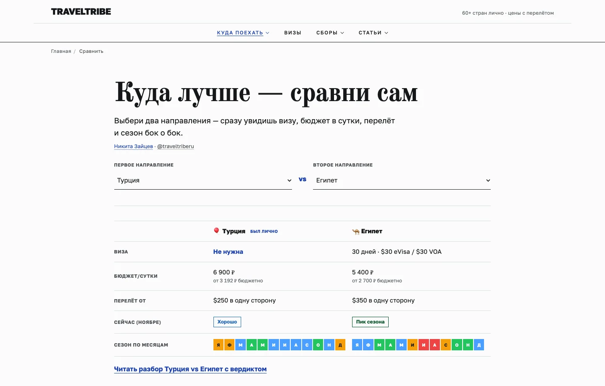

Where I started
I organised about 12 tours, averaging ten travellers at roughly US$5,000 each. That puts my estimate of total tour bookings at about US$600,000.
How a traveller decides
The site lets travellers start with a month, compare two destinations and check entry requirements. Each budget is attached to a trip scenario, including the number of days and any expenses to add separately.
What I built
I designed and built the site with Astro, TypeScript and Python, bringing destination discovery and budgeting into one journey. Travellers can cost a trip before they book.

